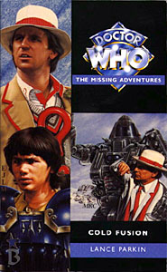

|
Cold Fusion
|
BASIC PLOT DOCTOR COMPANIONS MATERIALISATION CIRCUIT Pg 26 The Fifth Doctor's TARDIS arrives on the planet, in the main city on the Strip. PREPARATORY READING CONTINUITY REFERENCES Pg 5 "By the door, a small group of Wondarks from the Wateh Galaxy were engrossed in conversation." I've a feeling this is a comic book reference. "Despite their blank expressions, the small group of smartly dressed Kosnax at the bar would be rather more comfortable on this frozen planet." The Vardan/Kosnax war was mentioned in Time-Flight, as being the conflict in which the Xeraphins were supposedly wiped out. "The music was coming from the pseudolive band, a quartet of musicians from Eighty-One, the robot planet [...] They seemed happy enough, singing that they'd always be together in electric dreams." This is a reference to the book upon which the film Bladerunner was based, Philip K. Dick's 'Do Androids Dream of Electric Sheep?' Pg 7 "There are more things in heaven and earth than are dreamt of in your philosophy, Ziyou." This is mis-quote of a famous Shakespearean phrase, which the Doctor may have picked up in conversation in Empire of Glass. Pg 20 includes references to the events of Logopolis and Castrovalva, which, to Nyssa, occurred three days ago. The Doctor and Nyssa are in the Cloister Room, introduced in Logopolis, and appearing numerous times since, particularly in the novels. Pg 21 "[The Doctor] had lost none of his wisdom and benevolence. It exhilarated Nyssa, reminding her of Tremas, her late father." Who was taken over by the Master in The Keeper of Traken. "It's just that I'm sure my hair was longer yesterday. [...] It's probably a side effect of the regeneration..." Reference to the altering length of the fifth Doctor's hair in his first few stories, due to their being filmed out of order. Pg 22 "Now, I think it's high time we got Tegan home." The Doctor spends most of Season 19 trying to do this, only to succeed in Time-Flight and discover that he needn't have bothered in Arc of Infinity. Pg 23 "The Doctor had mentioned once that his ship had a 'lightspeed overdrive'" As seen in Logopolis. Also mention is made of the TARDIS's journey to Castrovalva, from that story, and Block Transfer Computation, from Logopolis and Castrovalva. Pg 27 "Well, you're not its owner, are you? Not really. Romana told me that you stole it." Romana, well, we all know who Romana is, and the Doctor stealing the TARDIS is seen in Lungbarrow. Pg 30 Reference is made to the Fosters, the Trakenite equivalent of a police force from The Keeper of Traken. Pg 35 "Rack off! That performance is a crude, racist..." Amusingly, Tegan's response to Nyssa's assertion that 'Bruce's' Australian speech patterns match her own is to respond with the Neighbours 'swearing but not really' cliched insult which graced our screens for so many years. Well, it did in Britain and Australia anyway. Pg 37 "He's an Adjudicator. The Adjudicators' Bureau is the intergalactic police force, committed to fairness and justice [...] All parties know that the Adjudicator will come to a just decision." Chris and Roz are Adjudicators from 2 or 3 centuries in the future of this story. The Master posed as an Adjudicator in Colony in Space. Pgs 52-53 "'There are very few forces in the universe that can deflect the course of a TARDIS. Very few.' [...] 'The Keeper of Traken did.' 'I think we can safely rule him out as a suspect.'" He did so in The Keeper of Traken, and we can rule him out as a suspect because he is an ex-Keeper; he has ceased to be. Pg 58 "Docking chamber thirteen selected." The number thirteen, the total number of Time Lord lives, pops up a lot in this book and many others by Lance Parkin, specifically The Infinity Doctors. Pg 59 "'Justice by your side.' Medford intoned. 'And fairness be your friend.'" The ritual greeting of the Adjudicators is established in Original Sin. Pg 60 "'A ruling elite of scientists?' Adric asked. In his experience, most advanced civilizations eventually adopted this structure. Both he and Nyssa came from such worlds, and from what he could gather about Gallifrey, so did the Doctor." Alzarius (Full Circle) and Traken (The Keeper of Traken). I'm not so sure he's right about Gallifrey, though. That one seems, like Earth, to be ruled by politicians. Pgs 61-62 "'The first subject,' The medical officer continued in the tone of a prosecuting counsel, indicating the Doctor, 'has two hearts, mirror images of each other. Both are equally developed. The electric activity of the subject's brain is at a higher level than ever previously recorded. His body temperature is at a constant fifteen degrees.'" The Doctor, it is widely assumed, gained his second heart during his regeneration in The Tenth Planet. He will go on to lose it in The Adventuress of Henrietta Street, and regain it following the events of Camera Obscura. I think the Doctor's lower than human body temperature was established in Planet of the Daleks, but I could be wrong. Pg 62 "This is a winter berry from the Mare Sirenum. A gift from the Martian government." Either humans or Ice Warriors; it's unclear. Pg 64 "I left my own people to search for the ideal society, a place of ordered peace and civilized values. Instead I found blasted wastelands, tyranny and intolerance." And he found all of those in The Daleks! The Doctor here gives a rather unusual justification for his leaving Gallifrey here; it doesn't square with anything else he's ever said since The War Games. Presumably, he's trying to ingratiate himself with Whitfield, and is oversimplifying. "I volunteer my services: think of me as a scientific advisor, it's a role I've played in the past." To UNIT, between Spearhead from Space and Robot. "They have targeted Adjudicator Lodges." The structure of the Adjudicators in Lodges is established in Original Sin. Pg 68 "'He might know all sorts of things about you. He might know what your future husband was called.' Tegan was leaving Nyssa trailing behind. 'As long as it isn't "Adric" I'm sure I'll cope.'" As is later established in The King of Terror, it's going to be Johnny Chess, Ian and Barbara's son. Pg 70 "The star I wear is a sign of mathematical excellence among my people." Adric wears the star from his first appearance in Full Circle and it, like him, is broken into lots of pieces in Earthshock. Pg 73 "Don't forget, Doctor, this was one of the earliest colonies. It was a lot more hospitable here than on Venus or Callisto." A colony on Venus is established as early as The Dalek Masterplan (Roald wants to watch the Mars-Venus game) and in Deceit, set a couple of centuries before Cold Fusion, it is described as having 'retail palaces in floating domes.' The short story, C9H13NO3, in Decalog 4: Re: Generations, features Callisto as a prison moon. It's one of the moons of Jupiter which does not get destroyed in To The Slaughter. Pg 74 name-checks the Daleks. Pg 79 "His muscular development was extraordinary, with broad biceps, developed pectorals and abdominal muscles. His calves and thighs were toned, and... now he had covered the rest with a large towel. Nyssa looked down at the floor." Having one of the Doctor's companions get naked was an NA cliche, as Parkin admits in his commentary on The Dying Days (in the ebooks section of the BBC Doctor Who website). The same thing happens to Benny in The Dying Days and presumably the whole thing was set off by Ace's first appearance in Timewyrm: Genesys, where she woke up naked. It is amusing that Chris ends up starkers in front of poor old virginal Nyssa, though. Pg 82 "Since the Dalek Wars Earth's fleet has been operating on reduced capacity." These are, presumably, wars that took place in the years following the events of Frontier in Space. Pg 85 The fact that the robot has no photograph of Tegan smiling is totally in character! More of Chris' allegedly racist Australian portrayal includes the use of the word 'Rabbits!' employed by Miss Jovanka herself on more than one occasion. This may be a sly dig at the fact that Janet Fielding really had to overplay the Australian accent, and has commented that many of her fellow Australians asked why she couldn't speak properly on the programme. Pg 88 There's a long section on people who suffer fear of Transmat travel, which would later be investigated in much more detail in the character of Lucretia in Down. Pg 90 Whitfield talks about Stonehenge, specifically the fact that it took fourteen hundred years to build. Not if you believe the Meddling Monk, it didn't, as he helped out with his anti-gravity lift. He said so in The Time Meddler. Personally, I think he was making it up, particularly since we've seen the building of Stonehenge in the short story 'The People's Temple' in Short Trips. Pg 92 "A figure hung in the tube, suspended in thick blue liquid. It was emaciated, with skeletal limbs and claw-like hands [...] 'It's the Master!' Adric exclaimed." Adric saw the Master looking roughly like this in The Keeper of Traken, although Adric should know that The Master had taken on Tremas' form by now. Pgs 92-93 "The Doctor furrowed his brow. His arch-enemy had reached the end of his natural life long ago." As established in The Deadly Assassin. Pg 93 "The Master was one of the Time Lords greedy enough to defy the inevitable. As his last body had begun to die, he had made his plans. He needed a vast energy source to fuel a new regenerative cycle. Across time and space he had tried to harness such a force: he'd tried to capture the Eye of Harmony on Gallifrey." The Deadly Assassin "When that failed, he'd attempted to rend asunder the constellation of Mandusus using a segment of the Key to Time." Uncertain reference (it's not Heart of TARDIS, Tomb of Valdemar or The Shadow of Weng-Chiang, which all fall in the Key to Time season). Perhaps it's a comics reference. "He'd even entered a pact with the Embodiment of Gris" The Daleks' Masterplan. "Each time the Doctor had beaten him, and saved billions of lives." We'd have been disappointed with anything less, frankly. "Finally, on Traken, Nyssa's home planet, the Master had captured the Source, the font of power for an entire galactic Union emcompassing a million star systems. The Doctor had thought he'd defeated the Master there, but his old enemy had survived and stolen the body of Tremas, Nyssa's father." The Keeper of Traken. "Revitalized, more deadly than ever, the Master had attempted to hold the entire universe to ransom. Once again the Doctor had foiled his plan" Logopolis. Pgs 93-94 "The Master sought revenge, but he became caught in his own trap. The Doctor saw gloved hands flailing as a Castrovalvan mob pinned his arch-enemy to the floor." Castrovalva. Pg 94 "'The Master is dead, Adric,' the Doctor concluded sadly." Wrong! Pg 94 "Contact" Telepathic communication between Time Lords, as established in The Three Doctors. "So ancient." Patience is over two million years old. "A woman's voice. Catlike." The picture of Patience on the wall of the Doctor's room in The Infinity Doctors describes her as having cat-like eyes. Interestingly, so does Susan. "Doctor who?" At this point, damn good question! "Concentrate." The Second Doctor's first word in The Power of the Daleks Pgs 94-95 "A familiar female voice spoke: 'We must think...' He crashed through the brittle metal. Romana was surrounded by leather-clad guards. A couple of them moved forward, their whips raised. 'Hello everybody,' the Doctor grinned, throwing his scarf back over his shoulder. 'Doctor are you all right?' Romana rushed forward. The guards stepped forward to restrain her. 'Yes, I'm fine,' he assured her. 'I was so worried about you.' She was grinning from ear to ear. K9's tail was wagging. The Doctor picked a piece of metal from his hair and examined it absent-mindedly. 'Oh, you shouldn't be worried, Time Lords have ninety lives.' 'How many have you got through?' He thought for a moment. 'About a hundred and thirty.'" This is a flashback to The Creature from the Pit, although the Doctor immediately comments that he was joking about the number of his lives. Pg 95 "Tell me more. You are a Time Lord? How old are you? Inside my mind. Probing my memories. Searching for secrets from cradle to grave. I have no cradle, I have no grave. I was born at Otherstide through the Loom of the House of Lungbarrow in Southern Gallifrey." This is established in Lungbarrow and Human Nature. Otherstide relates to the semi-mythological character of the Other, first introduced in the novelisation of Remembrance of the Daleks. The Doctor does have a grave, as it turns out. It's on Quiescia, as established in Alien Bodies, although it might not be now, since the events of The Ancestor Cell. "Waiting to be born. Strung out, spread really thin. Unable to think, unable to assemble my thoughts. I couldn't wait to get out." This relates to the idea that the Doctor is a recreation of the Other who threw himself into the Looms in the flashback sequence in Lungbarrow. "They were there. All forty-five of my cousins. Satthralope smacked me so hard I could barely walk and -" The Doctor says something like this on Pg 7 of Lungbarrow. The Doctor's memories are clearly playing tricks here - there should have been forty-four cousins waiting for him, as he makes it up to the permitted total of forty-five. Although, given the conclusion of Lungbarrow, this may be extremely subtle foreshadowing. "You are Loom-born? Yes, I think so." This is vitally important as it establishes that Patience, who we later find out escaped Gallifrey before the death of the Pythia (Cat's Cradle: Time's Crucible) knows about the Looms already. The Doctor's uncertainty about his loom-born status relates to his assertion in the Telemovie that he is half-human and remembers his father. This also ties in with aspects of Unnatural History, the pictures of his parents in The Infinity Doctors and even the fact that Leela is pregnant in Lungbarrow and the Doctor suggests that the child is named for him. Also, The Infinity Doctors almost suggests that Bernice is his mother and he is his own father (although in retrospect it's possible that the image of Bernice pregnant is from when she is carrying Peter). "Are you a scientist? 'Let me tell you, sir,' the Doctor bawled, 'that I am a scientist and I have been for several thousand --' 'The man's mad,' Kettering declared. The Doctor glared at him, before striding from the room, his cape swirling behind him." A flashback to The Mind of Evil. "You left Gallifrey? Why? 'I was bored.' 'Bored?' Jamie and Zoe chorused. The Doctor caught his breath, gathered his thoughts. 'The Time Lords are an immensely civilised race,' he explained. 'We can control our own environment; we can live forever -- barring accidents; and we have the secret of space-time travel... we hardly ever use our great powers. We consent simply to observe and gather knowledge.'" The War Games. "The Time Lords allowed you to leave?" Um, no. Not really. See The War Games "The young teacher, whatever his name was, wouldn't stop asking questions. The Doctor whirled to face him. 'Have you ever thought what it is like to be wanderers in the fourth dimension? Have you? To be exiles... Susan and I are cut of from our own planet, without friends or protection. But one day... we shall go back. Yes, one day... one day.'" An Unearthly Child (100,000 BC, whatever) Pg 96 "These accounts contradict one another." You're telling me! Although the Doctor does add that memories often do. "'If you would be so kind as to come with me?' 'Who are you?' He was so old, but there weren't any old people any more. He walked through the cloister with the aid of a stick, a knobbled stick with strange writing on it. There was a dark shape drifting behind him in the shadows. Outside the Capitol was burning. 'I couldn't possibly tell you that, oh no.'" This is the characterization of the First Doctor. The flashback sequence now going on is new, but relates to the First Doctor's first trip into Gallifrey's past as seen in Lungbarrow. He certainly has the same stick in that sequence. The dark shape drifting behind him is the Hand of Omega, first seen in Remembrance of the Daleks and shown to be following the Doctor around in Lungbarrow. "'You wear my husband's ring.' He held it up to the candlelight, examined it, then clutched it to his chest. 'Yes. So I do.'" This ring was worn by the First Doctor throughout his time in the TARDIS, but didn't fit the Second Doctor after his regeneration. It appears to have also belonged to the Other, or certainly one very much like it. The Doctor of The Infinity Doctors also wears such a ring. See also below. "'Please stop them -- they are trying to find my daughter-in-law, they are going to kill her child.' He placed a reassuring hand on her shoulder. 'Your granddaughter was born ten minutes ago, I was there at the birth. She is safe, quite safe' 'A girl? Where is she?'" This is presumably Susan. At first glance this doesn't tie in with the flashback from Lungbarrow, where the First Doctor meets Susan already about age 15. Susan also states, in Lungbarrow, that she was born at the exact time that the Pythia cursed the world (which we witness in Cat's Cradle: Time's Crucible). "She will be taken away from here, away from this madness. I will take her far from this world of vampires and valeyards." State of Decay and The Trial of a Time Lord. The implication is that Gallifrey is not a safe place to be, and is almost Inquisition-like in this time period. "'First, however, we must get you to safety.' 'Me?' He took her hand. 'Come, my dear.'" After the flashback in Lungbarrow, we do not see what happened to the Doctor and Susan next. The theory that makes the most sense is that, after he's rescued Susan aged 15, he goes back further, witnesses Susan's birth, and rescues Patience, sending her away in a prototype TARDIS (which pg 231 makes clear was her husband's). It's possible that the Other pre-programmed the Doctor to do this at the first opportunity, so that he knew his family would be safe. It's also possible that Susan was looking after the Other's ring, and gave it to the First Doctor just after they had met, recognizing something of her grandfather in him. "This memory is faint. It was a long time ago. I'm not even sure it's one of mine. The truth. A lot of what happened before my second regeneration is hazy. Great chunks of my life are missing." This deliberately muddies the waters as to exactly who was involved (a memory from the Other, or one of his own?) but also lends more credence to the popular theory that the First Doctor, at least, was an amnesiac. The 'great chunks of my life' line is a misquote of The Five Doctors. It's also a reference to the fact that lots of episodes from the first six years of the show are missing from the archives. "Your second regeneration? 'How far, Doctor? How long have you lived?' An oversized claw snapped open and shut, a human hand clasped a rail. A brain within a tank, red eyestalks glaring at him. A patchwork monster with a gurgling voice. 'Your puny mind is powerless against the strength of Morbius. Back! Back to your beginning!'" The Brain of Morbius, obviously, but also quoted at the beginning of Lungbarrow. Pgs 96-97 "Here and no further. A cold wind. A mountainside. It is dark. An old man stands there, alone. He raises his fist. 'Is this how it began, or how it will end?' the female voice asked without breaking the silence. A third voice spoke. 'It is both. Time is relative. History repeats itself, and repeats itself again. Father to son. The Doctor turned to see who had spoken. There was no one else there. Just him, the woman and the... the other. When did this happen? Tell me! But the Doctor was staring at the other. 'You!' the Doctor shouted. The other smiled." This is all very symbolic and rather unclear. It bears some similarities to a sequence that appears in both The Infinity Doctors and Father Time, as the Doctor watches the end of a world. The idea of history repeating itself is revisited in The Infinity Doctors, much of which is built upon other stories, and which features the McGann Doctor out of context, maybe. There may be other references to this sequence in other NAs. Pgs 101-102 "Cracks were appearing all along the body. The one at the neck had surged along the Patient's torso, finally running out of momentum at the hip. Another shot down from the fingertips to the elbow. [...] A new face was appearing, fading up into view, a new set of features superimposed over the old." The Patient, Patience, regenerates. Visually it is reminiscent of the Third Doctor's regeneration into the Fourth (superposition of faces), and the Fifth's into the Sixth (a big flash of light). This is also the first female regeneration we've ever witnessed (not counting Underworld). Pg 103 "'She's in a self-induced coma,' the Doctor's voice announced." The Time Lord ability to do this was introduced in Spearhead from Space. Pg 104 implies that Patience's TARDIS has been keeping her alive until she can regenerate, as it implied that the Doctor's TARDIS did in Planet of the Spiders (or the Cornell re-working that appeared in Love and War). Similarly the Doctor seems to need the TARDIS to regenerate for the first time (as Patience does here) in The Tenth Planet. Note that he doesn't need to be in the TARDIS for subsequent regenerations (although he sometimes is). Pg 105 The drinking song about a chronic hysteresis refers to the time loop in Meglos and the technical term for the howlround process that produced the first theme sequence. Pg 107 "Selected members of my people, the Time Lords, have the ability to regenerate." We knew that, but the implication is that people like Andred can't. Pg 108 makes clear that Patience is not a Time Lord, although she has regenerated. The implication is that eventually the old Gallifreyans would have developed this ability naturally. That's impressive. It's confirmed in The Infinity Doctors. "'And all... Time Lords were altered in this way?' Medford asked. 'Well, yes.' The Doctor said. 'Any other way would have been terribly unfair.'" Which kind of begs the question wasn't it unfair not to genetically alter all the non-Time Lords. Poor old Andred. Pg 110 makes it abundantly clear that Chris' idea of researching his Australian persona came entirely from watching the Aussie soap, Neighbours. Presumably he did this during his stay in late twentieth century Earth during Return of the Living Dad. (Or perhaps the Doctor's a closet fan and has the entire run of the programme on DVD in a room in the TARDIS somewhere!) Pg 113 "Civilian is a Xhosa word meaning "no guns"." I'm not familiar with the Xhosa language, as Roz is, being a native of that people, but I imagine her translation is not entirely accurate. Pg 119 "She found an identity card, a Unitatan coin and a couple of keycards." The Unitatus are a sect that evolved from way back. They started out as UNIT (The Invasion and so on) and then as UNISYC (Alien Bodies). Another branch evolved into The Knights of Geneve, as seen in the Benny NAs. This page dates Cold Fusion to a couple of centuries before Roz's time, which places it in the 28th century, as Original Sin was set in the 30th. Later the Seventh Doctor places it as nearly 4 centuries before Original Sin. Pg 124 The language the Doctor speaks, which I don't intend to try and reproduce on this page, is Gallifreyan. It looks like Greek, which is consistent with the appearance of Old High Gallifreyan in The Five Doctors. The Doctor also says it's a nursery rhyme. It could be the one from The Five Doctors, or any number from Lungbarrow, although those ones are rather depressing. That said, if you translate it letter by letter from the Greek, it reads: 'And I turned around and they were all wearing eyepatches,' which is the punchline of a story from Inferno that Nicholas Courtney repeats ad infinitum at conventions. Pg 125 "A ventilation duct!" Stalwart of corridor-running stories everywhere. Pg 130 Chapter 9 is entitled 'Escape to Danger', which is the title of Episode 3 of The Web Planet as well as one of the chapters in Blood Harvest and the chapter titles of far too many Terrance Dicks novelisations to name. Pg 133 mentions the Klulaki, who appear to surrender when saying 'Hello', and the Balvanians of Balvar, who are incredibly sarcastic. Both are alien races which appear to be unmentioned elsewhere. Pg 134 "I think I've twisted my ankle." Cwej twists his ankle! Another thing that companions were good at, although to be fair to Chris, when it happened to the others they tended not to be jumping from 5-story buildings at the time. Pg 140 "It's all right, Doctor. I've seen Blake's Seven." Says Tegan. Does she think that Transmat travel always happens with the same little musical sting, then? Pg 141: "'Contact,' the Doctor said." The Three Doctors again. Pg 142: Tegan and the Doctor christen the Patient as Patience. They never seem to tell her this, which is why she is not referred to as such in The Infinity Doctors. "She was born of Blyledge, one of the Senior Houses of Glorious Gallifrey" Blyledge is a Gallifreyan house mentioned on page 23 of Cat's Cradle: Time's Crucible. The use of the term 'Glorious Gallifrey' implies that Patience is looking back into the empire-building time as seen in that novel. "The House is old, older than the hill on which it stands. It is angular. Dark. A small dark building beneath an orange sky." The orange sky is as described by Susan in The Sensorites and as seen in The Invasion of Time. "Inside it is large and the walls are white, with a regular circular pattern on the floor. There is a walled garden in the centre of the House, a quadrangle filled with silver trees. The birds sing a pretty song and there's always music in the air." It's nothing like the Doctor's house in Lungbarrow. Hold on, though, it's small, but big inside, regular circular patterns, a cloister-like courtyard with silver trees? It's a TARDIS! Or something like one. The line 'The birds sing a pretty song and there's always music in the air.' is said by the dream version of Laura Palmer in backwards-forwards speech in the third episode of Twin Peaks (Thanks to John Wilson for this). Pgs 142-143 "Our youngest children play in the courtyard.' 'Our?' Tegan asked. 'Their,' the Doctor corrected." She's right, of course, in a way, although the Doctor's not to know that. Pg 143 "She has thirteen children." Thirteen? What an amazing coincidence. "I... can't find their names. She can't remember the names of her own children. I should be able to..." It's possible that Patience cannot remember the names of her children because they have been removed from time, as if they have never been, although she can remember the name of her husband and eldest son by pg 231, so they were both spared or escaped. "'Can she remember anything about the father?' Tegan prompted. The Doctor said his name, then paused. 'No, no. Quite impossible,' he declared. 'You've heard of him?' Tegan asked him. 'Oh, yes, but it's a name I've not heard in a long time. He was a pioneer and leader among my people, one of the first Gallifreyans to enter the time vortex after it was discovered. He came from a family of explorers: he led an expedition into deep time, returning with charts and trophies from every corner of the universe. He brought back with him travellers' tales of monsters and lost civilizations.'" Note that the Doctor does say the name, but it's not reported to us, the reader. The description given here, of course, fits the Doctor, right down to the family of explorers which includes the Ulysses references in The Nth Doctor and the Doctor as a pioneer among his people, which he said in An Unearthly Child. One possible interpretation is that, at some point in the Doctor's future, he goes back to the beginnings of Gallifrey and becomes the Other, thus making himself a closed time loop, which is pretty much what the end of Lungbarrow implies. This would also square with The Infinity Doctors being set in the Doctor's personal future, but Gallifrey's long-forgotten past. The expedition into deep time, may well be the trip into the farthest reaches of the future in The Infinity Doctors. The page gives a potted biography of the Other, which matches a number of implications, most notably from Unnatural History. "He took her as his wife the very day after his return." Presumably Omega is now trapped in the Black Hole, so her husband thought it was OK to marry her now. Most sources, particularly The Infinity Doctors, suggest that Patience was married to Omega before the Other. Interestingly, The Infinity Doctors also had the McGann Doctor married to her before she disappeared. So either that Doctor is actually the Other, or she was married to Omega, the Other and the Doctor at various points. "'While my people honour her husband, they no longer even know his real name.' 'But you recognized it,' Tegan noted. The Doctor faltered. 'I... I did, didn't I?' Another of the Other's repressed memories surfacing? Perhaps. Pg 145 The fourth section is called 'A bit of the Other' which is a marvelous double, perhaps even triple meaning - the sex with Patience, the stories of the Other from the distant past and the appearance of the Seventh Doctor. Pg 150 "Then he'd told her a little about himself and his people, the Time Lords. He still hadn't explained about the celery, though." And he wouldn't until The Caves of Androzani, and never to Tegan. You do have to wonder how he knew he was allergic to certain gases in the Praxis range when he first put the celery on in Castrovalva. He didn't even know his name at that point. Perhaps the Praxis thing is just an excuse for looking silly. Pg 157 "At the mathematical boundary of E-Space and N-Space the Doctor found a pan-dimensional structure" Warrior's Gate. Pg 158 has lots of references to The Keeper of Traken, as well as Chris' revelation about the Trakenite colony on Serenity. This has never been seen, however. Pg 159 "A year out of the Academy, I discovered that the Lodge was corrupt. I uncovered a conspiracy that went right to the heart of the Empire. I was forced to flee Earth. Since then, my friends and I have discovered that a handful of secret organizations have covertly been controlling human scientific research and defence policy for centuries. These are dark forces with their own agenda, and they must be fought." This is Chris' and Roz's backstory from Original Sin and hints at the subsequent NAs, and can also be seen as an allusion to the X-Files. The conspiracy he mentiones stretches back at least as far as Deceit, if not further, to Cat's Cradle: Warhead. His final line is a paraphrase of the Doctor's comment about the Cybermen, made in The Moonbase. Pg 163 Mention is made of the Third Draconian War, with the implication that this is quite recent. Presumably it is not the one that was happening around Frontier in Space, given that that was set somewhere around 200 years previously. Pg 164 "'Wait a moment,' Forrester frowned, 'it's you.' The man's thick eyebrows furrowed. 'Of course it's me. Hello, Roz.' She removed her helmet. 'No, it's you you.' 'That's right,' he said a little impatiently. 'No, no. You changed. Remember, you became all...' she did a little mime. 'What, all frock-coat and youthful appeal?' he scowled. 'Well, perhaps I did but I haven't yet.'" This is a paraphrase of a similar sequence between the Third Doctor and Sarah Jane in The Five Doctors. Note that the Seventh Doctor's description of 'frock coat and youthful appeal' could refer to either the Fifth Doctor (as Roz implies) or the Eighth. I'd love to know how she managed to mime 'frock coat and youthful appeal'; it's not the easiest charade in the book. "The new arrival cocked his head to one side, and this 'Doctor' gave him the strangest expression. 'Hello, Adric,' he said finally." The Seventh Doctor, of course, knows what happens at the end of Earthshock. "If you are here, then I take it that one of my past selves is, too. Which one: Boggle or Bland?" Great descriptions of Fourth and Fifth Doctors. Also, if Adric's clever, he can work out from this that he will not be around to see the Doctor regenerate again (Thanks again to John Wilson). Pg 165 "A boy from another universe." Adric is from E-Space. Full Circle. "An Adjudicator from nearly four hundred years in the future." This places Cold Fusion around the mid to late 27th century. "Is he still trying to get Tegan back to Heathrow?" Season 19. Pg 166 Two adjudicators are perving over a Maalri ('lovely bum, but the face of a warthog') who don't appear and some Kalkravian nuns, who do, but we don't get to hear what their bums are like. Or their faces, for that matter. Pg 167 "We're taking a linking flight to Beta Five, then picking up a Hyperion for a three-week safari on Heurippa, one of the Rimworlds." The Hyperion III was the cruiser in Terror of the Vervoids (Trial of a Time Lord, third bit), although this makes it clear that Hyperions I and II, and presumably more, were all around at the same time. Pg 170 "I can hypnotise you, slow your breathing," As the Doctor did to Sarah Jane in Terror of the Zygons. Pg 171 "The beating of a single heart, then two, then three." This representation of the Doctor and Patience's meeting in the mind is also a beautifully poetic representation of the act of conceiving a child, which is relevant here. "A woman dreaming of archways and glowing power lines." This is highly suggestive of the Master's "Adric-web" (Castrovalva), and the city of Castrovala. (With thanks to Bob Dillon.) "A tranquil room of slate-grey stone and running water. Fingers stroking an ivy leaf. It was dry. A stone space. Loom-calm." The Doctor in the Cloister Room at the beginning of the book, or Patience remembering her house as described on pg 142. Or both. Pg 172 has Patience remembering her arrival on this planet. "A dark-haired woman straddles her husband, his unfamiliar hands beneath her shoulder-blades. He tolls her over onto the grass, stroking her side and kissing her belly. As he kisses it again an owl flies through the amber sky. The sun is overhead, so it's a little after noon." Shag #1. The amber sky proves we are on Gallifrey (The Sensorites, The Invasion of Time), the owl (flying around in the daytime, oddly) is symbolic of Rassilon (Timewyrm: Revelation et al). "She sat up laughing, ticklng his beard." This incarnation is the Douglas Camfield Doctor, seen in flashback in The Brain of Morbius. "And by this time tomorrow, he will be a father himself." Patience's granddaughter (presumably Susan) is about to be born. "Power lines and shock webbing. Something wrong [...] Brainscream, something wrenching itself out of her mind. It hits her, the pain hits her again. Again." Still uncertain. Pg 173 "I want to stay here. Pressing her down, nuzzling her cheek and shoulder. Memories and bodies intertwined in a beautiful, intricate design. Her body moving with a rhythm both familiar and utterly new to him." Shag #2, which the Doctor kind of remembers. "There are buried memories here: your memories." Patience is sure that the Doctor is the guy she was sleeping with. Pg 173 "'Search the bedchambers.' 'You can't --' a staser blast, killing the housekeeper. The house screams again, its lights flicker. We all feel its pain. Screaming children. The eldest son, dragged with their mother by the hair into the courtyard. His twelve brothers and sisters are there already, all in blue. Where is his wife? Where is her husband?" The Doctor remembers this as the night that he was too late in The Infinty Doctors (pg 211), but only when prompted by Patience. He didn't remember it as his own memories. Pgs 173-174 "The eldest son stood tall and faced the captain, the guard in the plumed helmet. 'I am a Cardinal, and a Time Lord of the first rank. My father sits on the Supreme Council, as his father did before him. On whose authority are you acting?'" Patience's son is describing his father (The Doctor? The Other?) and his grandfather (Ulysses?) Pg 174 "The guard captain unfurled a scroll. 'By Presidential decree, only the Loom-born shall inherit the Legacy of Rassilon. There shall be no more children born of woman. We have the authority to search this House for the spawn of the Pythia.'" This doesn't quite square with Lungbarrow and Cat's Cradle: Time's Crucible, which implies that it was the Pythia's curse that prevented the birth of any more children, not Rassilon's decree. However, it can be squared by suggesting that the Pythia, irony in her final breath, cursed the planet by giving it what Rassilon was already trying to invoke by force of arms. Only in retrospect did this become a problem. Another possibility is that Patience is from the Infinity Doctors version of Gallifrey, where the "curse" happened differently. The curse is lifted with Leela's pregnancy in Lungbarrow. "'Let me see that.' The guard captain handed the scroll over. The eldest son read the hieroglyphs, examined the seal. 'It is genuine,' he concluded. 'They have issued a warrant for father's arrest. They accuse him of consorting with aliens.'" We knew that. It's the classic sting: tell someone to do something and then arrest them for doing it. "Something had broken within him as he had read it. When he spoke again, his voice contained none of its former resolution. 'My wife is expecting her child tomorrow. What do you propose that they do?' Doctors were moving towards the bedchambers. 'The law is clear, sir. Her pregnancy is to be ended at once. Your wife will be examined here, then taken to a medical centre. I must ask you to lead me to her.' As if to add emphasis, the guard captain placed his hand on the hilt of his sword. Numbly, the eldest son nodded and began to walk towards the living quarters. His mother screamed, begged them to stop. 'Why are you doing this now? Where is my husband?' she demanded. 'Please wait for my husband. He is a --'" Fantastic final line for this sequence! What happened next in the flashback remains speculation, but Cold Fusion itself implies that the First Doctor soon arrives to rescue Patience (pg 96). As to the fate of the children, the Doctor's dream sequence in The Infinity Doctors (pg 25) states that 'All his children were dead.' The reprise of this scene in Father Time (pg 273) replaces this with 'His lover was dead', the lover in question, of course, being Patience. Pg 176 The chapter title, 'Staring into the Abyss' is a reference to the Nietzsche quote at the top of The Left-Handed Hummingbird: 'And if you gaze for long into an abyss, the abyss gazes also into you.' This quotation pretty much defined huge aspects of the Seventh Doctor's persona and his battle. Pg 183 "Smiling sympathetically, the Doctor produced a Paisley handkerchief from thin air and passed it over. Adric finished mopping his brow with it, but it had vanished before he could hand it back." The Seventh Doctor wore Paisley in his costume, and his propensity for magic tricks was seen in Remembrance of the Daleks and The Greatest Show in the Galaxy amongst other places. Pg 186 The Doctor is wearing his half-moon glasses, as seen in Four to Doomsday. Pg 188 Patience's TARDIS is smaller on the inside than the outside. Not quite what you might expect. It also makes a 'wheezing groaning sound,' as TARDISes are wont to do in print. Pg 189 "The Doctor took a piece of chalk from his pocket and scratched a pictogram on a flat rock." Similar to Battlefield. Maybe Morgaine's alternative Earth was from the same timeline as the Ferutu. Pg 200 "Ten years ago at the All Worlds Science Fair on Dellah." Dellah is the location for many of the Benny adventures and she holds her chair in Xenoarchaeology at the University there. Until it's destroyed. See also Continuity Cock-Ups. This is its first mention in the books, foreshadowing the Benny NAs. Pg 201-202 gives us a quick whistle-stop tour of Tegan Jovanka, the story so far, including the events of Logopolis and Castrovalva. Pg 202 The Doctor and Patience endeavour to use the TARDIS's Time Control Unit, which is one of the things that the Time Lords removed from the Doctor's TARDIS after his capture in The War Games. Pg 214 "Yeah sure. "Chaos theory" - you know that people in the twentieth century thought that butterflies flapping their wings could start a hurricane on the other side of the world?" These people apparently include Justin Richards, given the opening sequence of Sometime Never... Pg 216 "It's a Time and Relative Dimension in Space machine." Note that Roz uses the singular of 'Dimension,' as Susan did in An Unearthly Child (100,000 BC, whatever). The eighth Doctor used the singular in the Telemovie, as does the Ninth Doctor in the first episode of the new series, Rose. "From the Martian Invasion onwards." The Dying Days (or possibly The Seeds of Death, but more likely the former). "Alien technology had provided improvements to FTL drives." Faster Than Light drives are mentioned quite often, but a primitive one appears in Superior Beings. "An Arcturan broadcast picked up by a terrestrial radio telescope had included enough information to build a working transmat." So that's how they did it in The Seeds of Death. An Arcturan appeared in The Curse of Peladon. "A salvage team had recovered a starchart of the whole sector from a derelict Dalek saucer." Presumably in the aftermath of The Dalek Invasion of Earth. Pg 217 "By the thirtieth century [the Unitatus] spend most of their time organizing charity events and arguing whether "Lethbridge-Stewart" was hyphenated or not." This is both funny and references The Brigadier (The Web of Fear onwards) and some aspects of Who fandom. Or indeed any form of fandom. Pg 218 "'These look like space-time co-ordinates. I think that they represent the Machine's last journey. Those are the co-ordinates of this planet, I recognize them from when we landed. I... don't recognize the others.' He was lying." Adric does recognize them as Gallifrey's co-ordinates, because Alzarius has the same co-ordinates, but negative (i.e. in E-Space). Interestingly, there appears to be no temporal content in co-ordinate settings, only spatial. Pg 221 "'You know, there are times when I wish I used expletives,' the Doctor concluded." In later incarnations, he does, Blood Harvest, for example ('something extremely coarse in Old Low Gallifreyan.') Pg 225 The chapter title is 'Downtime,' a reference to the MA Downtime and it's made-for-video counterpart. The Head of the Medical Facility refers to Patience as the Doctor's wife. He's right, of course, although the Doctor doesn't think so. Pg 227 "The Doctor crossed the room and unclipped the simboard from the end of Chris's bed. 'You seem to have made a full recovery, Mr. Cwej.' There was no sign at all of the stomach wound. 'You pronounced it right.'" Original Sin establishes that Cwej is pronounced Shvay, although Chris prefers it pronounced as it's spelled. It's not clear which one the Doctor actually said. "You're a Time Lord who travels around time and space with your companions in your TARDIS. Fighting injustices, defeating evil? Neither cruel nor cowardly?" This is Terrance Dicks' archetypal description of the Doctor. "Er... yes. I didn't realize I had a fan club." How little he knows! And what would DWAS think? "'Adric?' Chris said. 'But I thought that he was the one that... came from Alzarius,' he finished quickly." Chris nearly blows the gaffe on Earthshock, which would not have been a good thing to do. Pgs 227-228 "It's a technique beyond the science of the Humanian Era: I reversed the polarity of the neutron flow." The Humanian Era comes from the Telemovie. Reversing the polarity of the neutron flow was almost never said by the Third Doctor during his era (he does it in The Sea Devils, but nowhere else). He does say it in The Five Doctors and he also fuses the control of the Neutron flow in The Silurians. It's one of those old Doctor Who cliches which suggests it happened much more than it actually did. Pg 231 "The Doctor looked away, almost coyly" and "The Doctor placed his hand on Patience's thigh, so casually that it took a moment for Tegan to be surprised by the intimacy. It wasn't the sort of thing the Doctor did." Either the Doctor's remembered more about 'his' past, or, since he and Patience had sex in a kind of shared memory dreamscape they, like so many lovers before and since, have become unconsciously casual about touching each other. Although not many lovers get to have sex in a kind of shared memory dreamscape, I suppose. Pg 237 "We get the occasional observer or messenger, but by order of the Empress herself none bear arms." This, presumably, is the same Empress that the Doctor will go on to kill in So Vile a Sin. Pg 241 Part six is entitled 'Deus ex Machina' which was nearly an episode title in The Myth Makers (although that may also have been 'Zeus ex Machina'.) Pg 243 Chapter 16 is called 'The Empire Strikes Back'. Oh dear, oh dear, oh dear. Pg 250 Being smaller on the inside than the outside is described as being 'dimensionally immanent'. Pg 251 "'To avoid time pollution TARDISes are grown in space, well away from Gallifrey itself.' Patience said. The Doctor nodded sagely." By the future Gallifrey seen in Alien Bodies, they are bred and grown in the Vortex or in vast holding areas (The Taking of Planet 5). "Put simply, the Stattenheim signals are broadcast along the time contours in the Vortex that accommodate the Eye of Harmony simultaneously on Gallifrey and within each TARDIS. Elementary chronon transduction, really, but a very neat solution." A Stattenheim remote control appears in The Two Doctors. The simultaneous existence of the Eye of Harmony in a TARDIS and on Gallifrey explains one of the more serious continuity flaws in the Telemovie. Transduction barriers guard Gallifrey, as noted in The Invasion of Time. Pg 255 "Everything he knew of history, art and literature. Earth's defences and those of Ponten and Oberon." Orcini is a Knight of the Order of Oberon in Revelation of the Daleks. The NAs postulate that the Order of Oberon is what the Adjudicators will eventually evolve into. Pg 261 "If the brain is destroyed, you can't regenerate. That's what you said, isn't it?" In Camera Obscura, Sabbath notes that no one ever seems to shoot the Doctor in the head. "Medford placed the pistol to the back of Patience's head. His hand was still on her shoulder. She kept her eyes open, staring ahead, mouthing a plea to her husband." And here it is, confirmed, in case we hadn't worked it out by now. "Patience slowly faded out of existence." Were it not for later events, it would seem that Patience died here, and that's certainly what the Doctor thinks. However, The Infinity Doctors reveals that Omega has just reached out and taken her into the Anti-matter Universe where he lives. She will be reunited with the Doctor later in her time-stream and either later or earlier in his, dependent on the placing of The Infinity Doctors. The Doctor failing to recognize her as Patience in The Infinity Doctors lends further credence to the suggestion that that book is set either in the Doctor's past or a alternate universe. "The Doctor uttered a short prayer in a language he couldn't remember learning" Another of the Other's memories coming through? Pg 264 "The younger one set the gun down. 'Yes, Chief Scientist, I am the fifth incarnation and this chap is...' 'The seventh,' the other replied, 'and don't let anyone tell you anything different. Are you all right, old chap?'" The Seventh Doctor again implies he's more than what he seems (goes right back to Remembrance of the Daleks and Silver Nemesis, that does) but his use of the phrase 'old chap' implies he's suddenly turned into the Third. The use of the word "other" here is delicious. Pg 265 "The little man smiled thinly. 'Yes, I could. But then again, from a certain perspective, we've already died: me, you [The Fifth Doctor], Roz and Adric. From another, we never really existed, we don't count and this isn't happening.'" It's interesting to note that, by the time this book was published, everyone that the Seventh Doctor mentions is dead: Roz in So Vile a Sin, Adric in Earthshock, the Fifth Doctor in The Caves of Androzani and himself in The Telemovie. "The Chief Scientist looked down at the bloody rag that was all that remained of the female Gallifreyan. The fifth Doctor caught her eye, and a sad smile flickered across his face." In Ian Marter's novelisation of Earthshock, we get that same reaction, 'a sad smile,' to Adric's death. Pg 271 "To human eyes he wasn't even Benny's age." Bernice Summerfield, Love and War onwards. Pg 273 There are thirteen Ferutu ghosts. Again that number. Pg 274 In the Ferutu's universe the only thing named after Rassilon is Rassilon's Rift. Presumably the great Eye of Harmony experiment went horribly wrong. How unfortunate. "'Like the TARDISes on Mars?' Forrester asked." GodEngine. The Daleks and the Vampires are name-checked even in the utopia that is the Ferutu universe. Pg 278 "To us, your galaxy is known as the Mutters' Spiral, the home of a benevolent mutant insect species." Even in an alternative future, the name Mutters' Spiral persists. The reference to a benevolent insect species refers to Qxeleq's species in Falls the Shadow. Pg 281 "Something about him [The Fifth Doctor] irritated her, probably the realization that she was getting old: when the Doctor looks younger than you, then you're past it." This thought process presages Roz's actions in So Vile a Sin. "The Doctor was more relaxed around Adric than anyone else she'd ever seen. He watched him, was interested in what he was doing. Like a grandfather playing with his grandson. But there was more to it than that. The Doctor's eyes betrayed a sadness of some kind, some deep regret that he was leaving unvoiced. The younger Doctor had noticed it too, Roz could tell." Obviously the Seventh Doctor knows that Adric is going to die (Earthshock again). Slightly odd is the fact that Chris did know this, but Roz doesn't. Pg 282 The Cyberhost are the Ferutu universe equivalents of the Cybermen. Pg 283 "The seventh Doctor rubbed his forehead wearily. 'The entire universe is at stake and I'm locked in here with another incarnation of myself, and not even one of the good ones.'" This is the quote on the back cover, and expectations are completely subverted when it turns out to be the Seventh Doctor complaining about the Fifth and not the other way around. Pg 286 "Adric was the only other person in the room who knew what it was like to be marooned in another universe." Because he came from E-Space. Full Circle. Pg 290 In 8 billion years 'Humanity is long dead' and 'this galaxy has been abandoned by all sentient life for reasons' the Seventh Doctor 'had better not go into.' It's possible that the only civilization left by then is the one residing on the Needle in The Infinity Doctors and Father Time. Pg 292 "He picked up her nightgown. The blood had dried into Rorschach patterns: question marks and owls and stars." All, in their own way, symbolic of the Doctor, and particularly the Seventh. Owls were symbolic of the Time Lords in Timewyrm: Revelation. "It is not the first time you have met her, it will not be the last." Of course, the First Doctor has already met her, as established in this book, and so has the Other. The Doctor may also have already met her in The Infinity Doctors, or, depending on when it's set, he may do so in the future in that book. Of course what the Ferutu do not make clear is whether they are talking in the Doctor's timeline, Patience's timeline (and The Infinity Doctors is definitely in her future) or absolute time. "'Now, on both occasions that we met Omega, that was straightforward Blinovitch Conservation.' 'That was true all three times, yes, but it doesn't apply here.'" Blinovitch, from Day of the Daleks and Mawdryn Undead and literally hundreds of book references. One time that multiple Doctors met Omega was The Three Doctors. At least one Doctor has met him or will do in The Infinity Doctors, though not with any other incarnation. The fifth will go on to meet him in Arc of Infinity, but alone, so that can't be one of the references. More hidden adventures, then. Obviously Rassilon's not mentioned here as The fifth Doctor hasn't met him yet. Pgs 292-293 "'Now, Zodin erased our brains with mind rubbers.' 'I remember it well.'" Glorious pair of lines! The terrible Zodin was mentioned in The Five Doctors and Attack of the Cybermen, along with numerous attempted and contradictory explanations in most books you might care to mention (Lungbarrow has her as a sword-swallower, I recall). Pg 293 "Wolsey will be wondering where we've got to." Wolsey is the Doctor's cat, picked up in Human Nature. OLD FRIENDS AND OLD ENEMIES NEW FRIENDS AND NEW ENEMIES Patience, wife of the Doctor, or probably the Other. Patience also appears in The Infinity Doctors, but is not named there, presumably because that's not her real name. Adam, 'an ape who's got above himself' and Quint, a Shliman, with the head of a shark.
CONTINUITY COCK-UPS PLUGGING THE HOLES [Fan-wank theorizing of how to fix continuity cock-ups] FEATURED ALIEN RACES Amongst numerous references to other alien cultures, the important ones here are the Ferutu, a species of benevolent time travellers from an alternative universe where Gallifrey never existed. They re-appear, as the Gods, in the Benny series, climaxing with their actual arrival in Twilight of the Gods. The weapons officer, Bil, on Dattani's ship is from Procyon, and is blue-skinned with heavy ridges on his cheekbones and fronds instead of ears. FEATURED LOCATIONS A number of flashback sequences take us back to Ancient Gallifrey, probably in the few years leading up to the death of the Pythia. IN SUMMARY - Anthony Wilson |
|
 |